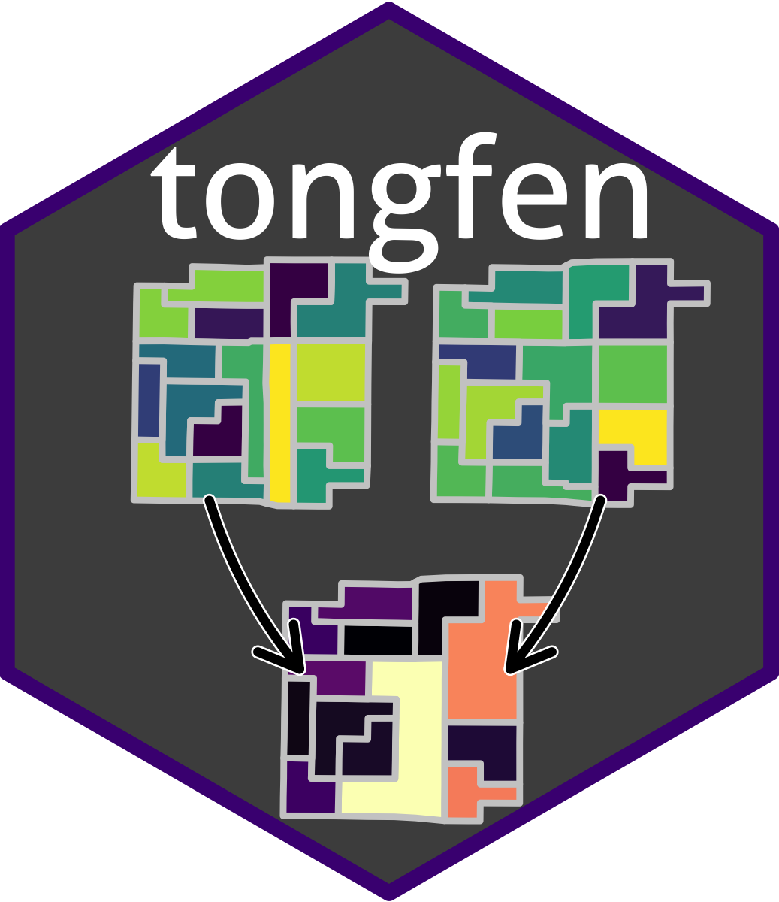

Detect likely geocoding anomalies in timelines on a common geography
Source:R/tongfen_anomalies.R
tongfen_detect_anomalies.RdTongFen is only as good as the geocoding that assigned the underlying data to geographic regions in the first place. Geocoding varies over time, and the same dwelling units, and the people living in them, can get assigned to different neighbouring regions in different years. In a timeline on a common geography this shows up as a surprising drop in one region that is offset by a corresponding jump in a neighbouring region.
This function lists the candidate regions with surprising drops in the given count variable, together with the neighbouring region that takes away most of the surprise when both are joined. Use it to check for possible problems and to calibrate the parameters before joining regions with `tongfen_anomaly_joins`. Not all surprising drops are due to geocoding problems, a drop that is not complemented by a neighbouring region is likely real.
The surprise of a change between two consecutive years ranges from 0 to 1. Only decreases are surprising, the surprise is the product of the surprise of the relative and of the absolute decrease, so that it takes a decrease that is large in both relative and absolute terms to be surprising. The total surprise of a region is the `p`-norm of the surprises across all changes in the timeline.
A candidate region and its neighbour are flagged for joining if joining reduces the total surprise of the candidate region to below `cutoff_fact` times its total surprise, or reduces it by more than `surprise_reduction_const`, or reduces it to below `cutoff_fact * sum_fact` times the sum of the total surprises of both regions. To keep this comparable the surprise after joining is computed from the change of the joined regions relative to the counts of the candidate region alone.
Usage
tongfen_detect_anomalies(
data,
variables,
id = "TongfenID",
neighbours = NULL,
rel_scale = 0.25,
abs_scale = 200,
p = 4,
surprise_cutoff = 0.15,
total_surprise_cutoff = 0.75,
cutoff_fact = 0.6,
surprise_reduction_const = 0.15,
sum_fact = 0.7
)Arguments
- data
data on a common geography, with one row per region, for example as returned by `tongfen_aggregate` or `get_tongfen_ca_census`. Needs to be of class sf unless `neighbours` is specified.
- variables
names of the columns holding the timeline of a count variable like population or dwellings, in temporal order. Changes from or to a missing value are not surprising and don't make up for surprising changes in neighbouring regions, and joined regions are missing a value if one of the regions they are made up of is. Replace missing values by zero beforehand if they stand for regions where nothing got counted
- id
name of the column that uniquely identifies the regions, default is "TongfenID"
- neighbours
optional, neighbouring regions as a table with the identifiers of pairs of neighbouring regions in the first two columns, or as a neighbours list like the ones returned by `spdep::poly2nb`. By default all regions with intersecting geometries are neighbours, which can miss neighbours if the geometries have been simplified and don't share their boundaries any more.
- rel_scale
relative decrease that is half way to full surprise, default is `0.25` for a 25% drop
- abs_scale
absolute decrease that is half way to full surprise, default is `200`
- p
exponent of the norm used to combine the surprises across the timeline into the total surprise. Large values focus on the most surprising change, 1 adds up the surprises of all changes, default is `4`
- surprise_cutoff
changes with larger surprise count as surprising, default is `0.15`. Only regions with at least one surprising change are candidates
- total_surprise_cutoff
only regions with larger total surprise are candidates, default is `0.75`
- cutoff_fact
join regions if the total surprise after joining is lower than this share of the total surprise of the candidate region, default is `0.6`
- surprise_reduction_const
join regions if joining lowers the total surprise by more than this, default is `0.15`
- sum_fact
join regions if the total surprise after joining is lower than `cutoff_fact * sum_fact` times the sum of the total surprises of both regions, default is `0.7`
Value
A tibble with one row for each candidate region, most surprising first, with the identifier of the region, the number of surprising changes `surprise_count`, the total surprise `surprise_total`, the `period` with the most surprising change, the identifier of the `neighbour` that takes away most of the surprise, the total surprise `surprise_total_joined` after joining both and `join` indicating if both regions qualify to get joined.
Examples
# Check 2001 through 2021 dissemination area level population timelines in the
# City of Vancouver for possible geocoding problems
if (FALSE) { # \dontrun{
datasets <- c("CA01","CA06","CA11","CA16","CA21")
meta <- meta_for_additive_variables(datasets,"Population")
data <- get_tongfen_ca_census(regions=list(CSD="5915022"),meta=meta,level="DA",base_geo="CA21")
anomalies <- tongfen_detect_anomalies(data,paste0("Population_",datasets))
} # }